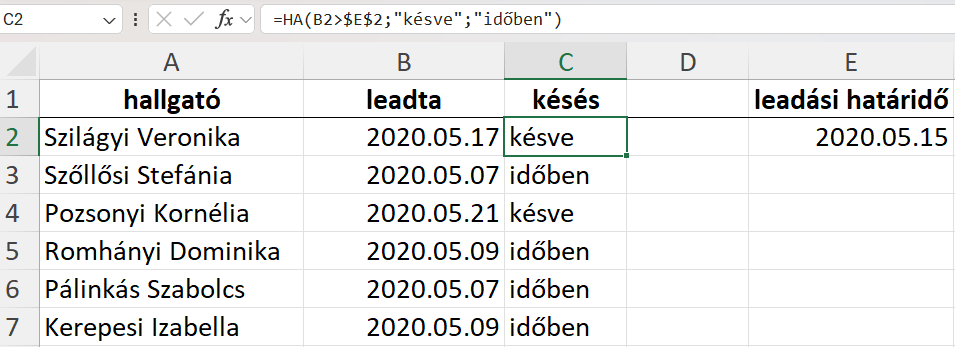

Bevezetés
A táblázatkezelő programok eredetileg gazdasági és pénzügyi számítások támogatására készültek, azonban napjainkra általános célú eszközökké váltak az adatok rendszerezésére, elemzésére és szemléltetésére. Az Excel használata különösen előnyös minden olyan feladatnál, ahol az információk táblázatos formában áttekinthetők, és a közöttük lévő összefüggések számításokkal vagy diagramokkal vizsgálhatók.
A korábbi tanulmányok során már megismerkedtünk a cellákban tárolt adatok kezelésével, az alapvető műveletekkel és a leggyakrabban használt függvényekkel. Gyakorlati feladatokon keresztül megtanultuk, hogyan lehet adatokat feldolgozni, illetve az eredményeket grafikus formában megjeleníteni.
Az emelt szintű érettségi azonban ennél összetettebb gondolkodást és problémamegoldást igényel. A következő fejezetekben röviden áttekintjük a legfontosabb alapfogalmakat és adatkezelési módszereket, majd fokozatosan haladunk a kreativitást és logikus gondolkodást igénylő feladatok felé.
Az Excel különösen hasznos nagy mennyiségű adat gyors feldolgozására, statisztikai és pénzügyi számítások elvégzésére, valamint diagramok és jelentések készítésére. Megfelelő használatával jelentősen csökkenthető a manuális számítások ideje és a hibák száma.
Adattípusok a táblázatkezelésben
A táblázatkezelő programok celláiban különböző adattípusok tárolhatók. A legfontosabb típusok a következők:
Szám
Egész vagy tizedes szám, amelyen matematikai műveletek végezhetők. Például: 25, 3.14, -8.
Szöveg
Karakterlánc, amelyet a program nem számként kezel. Például: Név, Budapest, Termék1.
Logikai érték
Igaz vagy hamis érték (TRUE / FALSE), amelyet gyakran feltételek és logikai vizsgálatok során használunk.
Excel függvények rövid áttekintése
| Kategória | Függvények |
|---|---|
| Statisztikai | =ÁTLAG()Számok átlagát számítja., =DARAB()Szám típusú cellák darabszáma., =MAX()Legnagyobb érték visszaadása., =MIN()Legkisebb érték visszaadása., =NAGY()Kiválasztott sorszámú legnagyobb érték., =KICSI()Kiválasztott sorszámú legkisebb érték., =ÁTLAGTÖBB()Átlag feltételek alapján., =MAXHA()Maximum feltétel alapján. |
| Matematikai és trigonometriai | =ABS()Abszolút érték., =GYÖK()Négyzetgyök számítása., =KEREKÍTÉS()Szám kerekítése., =MARADÉK()Osztás maradéka., =HATVÁNY()Hatványozás., =SZUM()Számok összeadása., =SZUMHA()Összeg feltétel alapján., =VÉLETLEN.KÖZÖTT()Véletlen szám tartományban. |
| Dátum és idő | =ÉV()Év kiolvasása dátumból., =HÓNAP()Hónap kiolvasása., =NAP()Nap kiolvasása., =DÁTUM()Dátum létrehozása., =IDŐ()Idő létrehozása., =MA()Aktuális dátum., =MOST()Aktuális dátum és idő. |
| Logikai | =HA()Feltételvizsgálat., =ÉS()Több feltétel egyszerre., =VAGY()Legalább egy feltétel igaz., =NEM()Logikai negáció. |
| Keresési és hivatkozási | =FKERES()Keresés oszlopok között., =VKERES()Keresés táblázatban., =INDEX()Adat visszaadása pozíció alapján., =HOL.VAN()Elem pozíciójának keresése., =XKERES()Modern kereső függvény. |
| Szöveg | =BAL()Szöveg első karaktereit adja vissza., =JOBB()Szöveg utolsó karaktereit adja vissza., =KÖZÉP()Szöveg rész kivágása., =HOSSZ()Karakterek száma., =ÖSSZEFŰZ()Szöveg összekapcsolása. |
| Adatbázis | =AB.SZUM()Összeg feltételes adatbázisban., =AB.ÁTLAG()Átlag feltételekkel., =AB.DARAB()Rekordok száma., =AB.MIN()Minimum feltétellel., =AB.MAX()Maximum feltétellel. |
Cellahivatkozások és alapfogalmak
Cellahivatkozások
A cellahivatkozás azt adja meg, hogy egy képlet melyik cella értékére hivatkozik. A táblázatkezelésben háromféle cellahivatkozást különböztetünk meg: relatív, abszolút és vegyes hivatkozást.
Relatív cellahivatkozás
A relatív hivatkozás a leggyakrabban használt forma. Másoláskor a hivatkozás a másolás irányának megfelelően módosul, mert a program az aktuális cellához viszonyított elhelyezkedést tárolja.
=A1+B1
Ha ezt a képletet lejjebb másoljuk, például a következő sorba, akkor automatikusan =A2+B2 formára módosul.
Abszolút cellahivatkozás
Abszolút hivatkozás esetén a cella helye rögzített. Másoláskor nem változik, mert a program a cella konkrét pozícióját tárolja. A rögzítést a $ jel alkalmazásával végezzük.
=$A$1
A fenti hivatkozás másolás után is minden esetben az A1 cellára fog mutatni.
Vegyes cellahivatkozás
Vegyes hivatkozás esetén az egyik koordináta rögzített, a másik relatív. Így másoláskor csak az egyik irányban változik a hivatkozás.
=$A1 (oszlop rögzített)
=A$1 (sor rögzített)
Attól függően, melyik koordinátát rögzítjük, a képlet vízszintes vagy függőleges másoláskor módosul.
A "Jolly Joker": Cellák rögzítése ($ jel)
Bár ez nem egy függvény, az érettségin elveszített pontok jelentős része abból fakad, hogy a képletek másolásakor (lefelé vagy jobbra húzásakor) a hivatkozott cellák és táblázatok "elcsúsznak". Ennek elkerülésére abszolút cellahivatkozást használunk.
Az F4 billentyű varázsa
Ha egy képlet írása közben rákattintasz egy cellára (pl. A1), majd megnyomod az F4 billentyűt a billentyűzeteden, az Excel automatikusan körbeveszi dollárjelekkel ($). Az F4 ismételt megnyomásával léptethetsz a rögzítési típusok között:
- $A$1 (Teljes rögzítés): Sem az oszlop (A), sem a sor (1) nem fog elmozdulni a képlet másolásakor. (Ezt használjuk leggyakrabban, pl. FKERES táblázatainál vagy konstans értékeknél).
- A$1 (Sor rögzítése): Csak a sorszám van rögzítve. Lefelé húzásnál az 1-es sor marad, de jobbra húzásnál az A oszlop B-re változik.
- $A1 (Oszlop rögzítése): Csak az oszlop van rögzítve. Jobbra húzásnál az A oszlop marad, de lefelé húzásnál az 1-es sor 2-esre változik.
- A1 (Relatív hivatkozás): Nincs rögzítve. A képlet másolásával az oszlop és a sor is dinamikusan változik.
Alapvető műveletek
Jelöljön ki egy cellát, majd írjon be egy egyenlőségjelet (=). Ezzel azt jelzi az Excelnek, hogy a cella képletet fog tartalmazni.
Írja be például a következőket: =2+4, =4-2, =2*4 vagy =4/2.
Aritmetikai műveletek
- Összeadás: +
- Kivonás: -
- Szorzás: *
- Osztás: /
- Hatványozás: ^
HA() függvény használata
A HA függvény az Excel egyik leggyakrabban alkalmazott logikai függvénye. Segítségével egy feltétel teljesülését vizsgálhatjuk, és annak megfelelően különböző eredményt adhatunk vissza.
Működési elv
A függvény kétféle eredményt adhat:
- Ha a feltétel igaz → az első megadott értéket adja vissza
- Ha a feltétel hamis → a második megadott értéket adja vissza
Szintaxis
=HA(logikai_vizsgálat; érték_ha_igaz; érték_ha_hamis)Példa
Az alábbi példa azt vizsgálja meg, hogy a diák késve adta-e le a házi feladatot:

- B2>$E$2 → Ez a logikai feltétel. Akkor igaz, ha a B2 értéke nagyobb, mint az E2 értéke.
- "késve" → Ezt az eredményt adja vissza, ha a feltétel igaz.
- "időben" → Ezt az eredményt adja vissza, ha a feltétel hamis.
Amennyiben a képletet a C2 cellába írjuk, akkor az a B2 cella értékét vizsgálja. Ha a képletet lefelé másoljuk (például C3, C4 stb. cellákba), akkor a relatív hivatkozás miatt mindig az adott sor B oszlopbeli értékét fogja ellenőrizni.
- C2 cellában → a képlet a B2 értékét vizsgálja
- C3 cellában → a képlet automatikusan a B3 értékét vizsgálja
- C4 cellában → a képlet a B4 értékét vizsgálja
Az $E$2 jelölés abszolút cellahivatkozást jelent. Ez azt jelenti, hogy a képlet másolásakor az E2 cellára való hivatkozás nem változik.
Összefoglalva: ha a B2 cellában szereplő érték meghaladja az E2-ben megadott határértéket, akkor az eredmény „késve”, ellenkező esetben „időben”.
Egy feltételes statisztika: DARABHA, SZUMHA, ÁTLAGHA
Ha az adatok között csak egyetlen feltétel alapján kell számolni, összegezni vagy átlagolni, akkor a többes feltételű függvények (HATÖBB) helyett használhatjuk ezeket az egyszerűbb, alapváltozatokat is.
Melyik mire való?
- DARABHA: Megszámolja, hány olyan cella van egy tartományban, ami megfelel az egyetlen megadott feltételnek.
- SZUMHA: Összeadja azokat az értékeket, amelyek mellett a megadott feltétel teljesül.
- ÁTLAGHA: Átlagot számol azokból a cellákból, amelyeknél a feltétel igaz.
Szintaxis
=DARABHA(tartomány; feltétel)
=SZUMHA(vizsgált_tartomány; feltétel; [összeg_tartomány])
=ÁTLAGHA(vizsgált_tartomány; feltétel; [átlag_tartomány])Példák
- Hány budapesti lakos van?
=DARABHA(C2:C100; "Budapest") - Mennyi a "Készpénz" fizetések összege?
=SZUMHA(D2:D100; "Készpénz"; E2:E100) - Mennyi a nők átlagéletkora?
=ÁTLAGHA(B2:B100; "Nő"; F2:F100)
Többfeltételes statisztika: SZUMHATÖBB, DARABHATÖBB, ÁTLAGHATÖBB
Ezek a függvények elengedhetetlenek, ha egy nagy adattáblából több feltétel alapján szeretnénk adatokat összesíteni, megszámlálni vagy átlagolni. Az érettségin szinte biztosan találkozol legalább az egyikkel.
Működési elv
- DARABHATÖBB: Megszámolja, hány sor felel meg az összes megadott feltételnek.
- SZUMHATÖBB: Összeadja egy oszlop értékeit, de csak azokban a sorokban, amelyek megfelelnek a feltételeknek.
- ÁTLAGHATÖBB: Átlagolja egy oszlop értékeit a feltételeknek megfelelő sorokban.
Szintaxis és a feltételek megadása
=SZUMHATÖBB(összeg_tartomány; kritérium_tartomány1; kritérium1; [krit_tartomány2; krit2]...)
=DARABHATÖBB(kritérium_tartomány1; kritérium1; [krit_tartomány2; krit2]...)💡 Fontos szabályok a kritériumok megadásához:
- Ha pontos szöveget vagy számot keresel, elég beírni:
"Budapest"vagy5. - Ha relációs jelet használsz, azt idézőjelbe kell tenni! Például:
">50"vagy"<=100". - Ha egy relációs jelet egy cellahivatkozással akarsz összekötni, használd az
& (összefűz) jelet! Például:
">"&D2(Nagyobb, mint a D2 cella értéke).
⚠️ VIGYÁZAT: A nagy "SZUMHA" vs "SZUMHATÖBB" csapda!
Az érettségin nagyon sokan rontják el a SZUMHA és a SZUMHATÖBB függvények felcserélését a paraméterek sorrendje miatt:
- A SZUMHA esetében az összeg_tartomány (amit össze akarunk adni) a függvény legvégén van.
- A SZUMHATÖBB esetében az összeg_tartomány a függvény legelején (az első paraméter) található!
Ha bizonytalan vagy, érdemes mindig a SZUMHATÖBB / DARABHATÖBB függvényeket használni, még akkor is, ha csak egy feltétel van, mert az is hibátlanul működik 1 feltétellel is!
A klasszikus páros: INDEX és HOL.VAN
=INDEX(mit_akarok_visszakapni; HOL.VAN(mit_keresek; hol_keresem; 0))
Bár az XKERES egyre elterjedtebb, az INDEX és a HOL.VAN
függvények együttes használata az emelt szintű érettségi egyik legfontosabb követelménye
a rugalmas adatkeresésre. Ezzel a módszerrel bármilyen irányba kereshetünk.
Hogyan épül fel?
A két függvényt egymásba ágyazva használjuk. A logika a következő:
- A HOL.VAN megkeresi, hogy a keresett érték hányadik sorban (vagy oszlopban) van.
- Az INDEX pedig ebből a sorszámból kiindulva visszaadja a számunkra szükséges adatot egy másik oszlopból.
Szintaxis
=INDEX(visszaadandó_tömb; HOL.VAN(keresett_érték; keresési_tömb; 0))- visszaadandó_tömb: Az az oszlop, ahonnan az eredményt (pl. az árat, nevet) várjuk.
- keresett_érték: Amit keresünk (pl. egy termékkód egy adott cellában).
- keresési_tömb: Az az oszlop, ahol a keresett értéket megtaláljuk.
- 0: Nagyon fontos! Ez jelzi az Excelnek, hogy pontos egyezést keresünk. Ezt a vizsgán ne felejtsük el!!
XKERES() függvény használata
Az XKERES az Excel egyik legmodernebb és legsokoldalúbb keresőfüggvénye, amely a korábbi kereső függvényeket(INDEX HOL.VAN, FKERES és VKERES) hivatott leváltani és továbbfejleszteni. Ráadásul a HAHIBA() függvény előnyeit is sikerült beleágyazni!
Működési elv
A függvény egy megadott értéket keres egy kijelölt tartományban, és amikor megtalálja, egy másik, vele azonos méretű tartományból adja vissza a megfelelő pozícióban lévő adatot. Kiemelkedő előnye a régebbi függvényekkel szemben, hogy:
- Balra (vagy felfelé) is tud keresni, nem csak jobbra.
- Alapértelmezés szerint pontos egyezést keres.(lehetőleg azért írjuk ki a 0-t az egyezés típushoz)
- Nem omlik össze, ha új oszlopokat szúrunk be a táblázatba, mivel nem oszlopindexet (sorszámot) használ.
- Beépítetten képes kezelni a hiányzó adatokat hibaüzenetek nélkül.
Szintaxis
=XKERES(keresési_érték; keresési_tömb; visszaadott_tömb; [ha_nincs_találat]; [egyezés_módja]; [keresési_mód])(A szögletes zárójelben lévő paraméterek megadása opcionális.)
Példa
Tegyük fel, hogy egy termék azonosítóját (B2 cella) ismerjük, és szeretnénk kikeresni a termék árát egy árlistából. A termékazonosítók az E oszlopban (E2:E20), az árak pedig a C oszlopban (C2:C20) találhatók:
pelda.png)
- B2 (keresési_érték) → Ezt az azonosítót keressük a táblázatban.
- $E$2:$E$20 (keresési_tömb) → Ebben az oszlopban keressük a B2 cellában lévő értéket.
- $C$2:$C$20 (visszaadott_tömb) → Ebből a tartományból szeretnénk megkapni a végeredményt (az árat), ha megvan a találat.
- "Nincs raktáron" ([ha_nincs_találat]) → Ezt a szöveget adja vissza a függvény a #HIÁNYZIK hibaüzenet helyett, ha a termékazonosító nem szerepel a listában.
A keresési és visszaadott tömböknél itt is abszolút cellahivatkozást ($ jel) érdemes használni, hogy a képlet lefelé húzásakor (másolásakor) a hivatkozott árlista tartománya ne csússzon el. Észrevehető, hogy az XKERES könnyedén visszaadja a C oszlop értékét az E oszlopban történő keresés alapján (balra keresés), amit a hagyományos FKERES függvénnyel trükközés nélkül nem lehetne megoldani.
Egymásba ágyazott logikai függvények (HA, ÉS, VAGY)
Gyakran előfordul, hogy egy döntés meghozatalához nem elég egyetlen feltételt
vizsgálni. Ilyenkor a HA függvény logikai vizsgálat részébe az
ÉS vagy a VAGY függvényeket ágyazzuk be.
Melyiket mikor használjuk?
- ÉS(): Akkor ad IGAZ eredményt, ha a benne lévő összes feltétel teljesül. (pl.: A diák elmúlt 18 éves ÉS budapesti).
- VAGY(): Akkor ad IGAZ eredményt, ha a benne lévő feltételek közül legalább egy teljesül. (pl.: A rendelésszám "A" betűvel kezdődik VAGY az érték nagyobb 10000-nél).
Példák a szintaxisra
Mindkét feltételnek teljesülnie kell:
=HA(ÉS(B2>18; C2="Budapest"); "Elfogadva"; "Elutasítva")
Elég az egyik feltételnek teljesülnie:
=HA(VAGY(D2="Készpénz"; D2="Bankkártya"); "Fizetve"; "Függőben")Szövegmanipuláció (BAL, KÖZÉP, JOBB, SZÖVEG.TALÁL)
Gyakori feladat, hogy egy meglévő szövegből (pl. adószám, személyi szám, kódok) csak egy bizonyos részt kell kinyerni. Erre szolgálnak a szövegfüggvények.
Alapfüggvények
- BAL(szöveg; karakterek_száma): A szöveg elejéről (balról) vág le adott számú karaktert.
- JOBB(szöveg; karakterek_száma): A szöveg végéről (jobbról) vág le adott számú karaktert.
- KÖZÉP(szöveg; honnan_kezdje; karakterek_száma): A szöveg belsejéből vág ki részt. (Pl. a 3. karaktertől kezdve vágjon ki 4 karaktert).
- HOSSZ(szöveg): Megadja, hány karakterből áll a szöveg.
Dinamikus keresés a SZÖVEG.TALÁL() függvénnyel
Néha nem tudjuk pontosan, hány karaktert kell levágni (pl. a vezetéknév hosszúsága változó).
Ilyenkor a SZÖVEG.TALÁL függvénnyel megkereshetjük egy adott karakter
(pl. a szóköz vagy egy kötőjel) pozícióját.
Vezetéknév kivágása egy teljes névből (szóközig tartó rész):
=BAL(A2; SZÖVEG.TALÁL(" "; A2) - 1)A - 1 azért kell a végére, hogy magát a szóközt már ne vágjuk bele az eredménybe.
A beugratós KEREKÍTÉS függvény
A KEREKÍTÉS függvénnyel nem csak tizedesjegyekre lehet kerekíteni!
A második paraméter (a számjegyek száma) trükkös megadásával tízesekre, százasokra,
vagy ezresekre is kerekíthetünk. Ez a vizsgáztatók egyik kedvenc "beugratós" kérdése.
A kerekítés szabályai a paraméter alapján:
- Pozitív szám: Tizedesjegyekre kerekít. Példa: KEREKÍTÉS(3,1415; 2) → 3,14
- Nulla (0): A legközelebbi egész számra kerekít. Példa: KEREKÍTÉS(3,8; 0) → 4
- Negatív szám: A tizedesvesszőtől balra kerekít (tízesekre, százasokra).
🎯 Kerekítés negatív számmal (Példák):
- Legközelebbi tízesre kerekítés:
=KEREKÍTÉS(1234; -1)→ Eredmény: 1230 - Legközelebbi százasra kerekítés:
=KEREKÍTÉS(1256; -2)→ Eredmény: 1300 - Legközelebbi ezresre kerekítés:
=KEREKÍTÉS(12345; -3)→ Eredmény: 12000